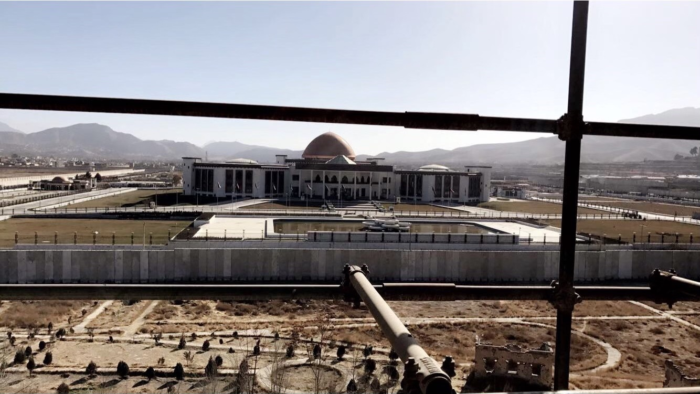
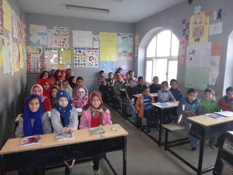

Misconceptions of Afghanistan is a zine that talks about Afghanistan from the perspective of someone who used to live there and has visited recently. It goes over some of the misconceptions of the country and how the reality of the situation there is a little different than how people actually think it is. I interviewed Rishinia Hakimi to get some insight on what Afghanistan is really like from someone who grew up there and about the situation as a whole. These are some images that are used in the booklet and were taken by Hakimi when she most recently visited the country:
 The Parliament Building in Afghanistan taken by Rishina Hakimi.
 The Aschiana Foundation taken by Rishina Hakimi.
The zine itself: